Visualization Functions
2025-11-10
Source:vignettes/Visualization_Functions.Rmd
Visualization_Functions.RmdIntroduction
This guide helps you choose and customize figures
for interpreting GSEA results produced within
SigFun.
For full workflows, see:
-
QuickStart — built-in analysis
(
sig2Fun()) - Stepwise Analysis — custom analysis pipeline
- Data Preparation — detailed input formatting
- Custom Gene Ranking — use your own ranking metric before enrichment
Prerequisites
Before plotting, ensure you have:
- A
SummarizedExperimentobject with compatible data and metadata
- The GSEA result and correlation
table already added (automatically if you used
sig2Fun())
Below shows the minimal code to prepare the final
SE_res object for plotting using the built-in pipeline.
# Load required packages
library(SigFun)
#>
library(dplyr)
#>
#> Attaching package: 'dplyr'
#> The following objects are masked from 'package:stats':
#>
#> filter, lag
#> The following objects are masked from 'package:base':
#>
#> intersect, setdiff, setequal, union
library(ggplot2)
# Load demo data
data("expr.data", "mapping", "SIG_MAT", "t2g")
# Subset to KEGG and WikiPathways only (speeds up demo)
t2g_kegg_wp <- t2g %>%
dplyr::filter(grepl("^KEGG|^WP", gs_name)) %>%
dplyr::distinct(gs_name, ensembl_gene)
# Construct SummarizedExperiment
SE_data <- SummarizedExperiment::SummarizedExperiment(
assays = list(abundance = as.matrix(expr.data)),
rowData = S4Vectors::DataFrame(mapping, row.names = mapping$ensg_id),
colData = S4Vectors::DataFrame(SIG_MAT)
)
# Run built-in SigFun analysis (see QuickStart for details)
SE_res <- sig2Fun(
SE_data,
corMethod = "logit",
t2g = t2g_kegg_wp,
strings = c("KEGG", "WP")
)
#> using 'fgsea' for GSEA analysis, please cite Korotkevich et al (2019).
#> preparing geneSet collections...
#> GSEA analysis...
#> Warning in fgseaMultilevel(pathways = pathways, stats = stats, minSize =
#> minSize, : For some of the pathways the P-values were likely overestimated. For
#> such pathways log2err is set to NA.
#> Warning in fgseaMultilevel(pathways = pathways, stats = stats, minSize =
#> minSize, : For some pathways, in reality P-values are less than 1e-10. You can
#> set the `eps` argument to zero for better estimation.
#> leading edge analysis...
#> done...Visualization Functions (12)
All visualization functions in this vignette take a
SummarizedExperiment object containing GSEA results. Each
function provides a different perspective on enriched pathways, from
overview summaries to detailed gene-level visualizations.
plot_heat()— Integrative multi-panel heatmap summarizing pathways by NES, p-values, and enrichment curves.barPlot()— Bar chart ranking top enriched pathways by significance or enrichment score.chordPlot()— Circular diagram linking genes to enriched pathways to show shared and unique memberships.cnetPlot()— Category–gene network visualizing shared genes and connectivity among pathways.dotPlot()— Dot chart encoding significance and gene ratio across pathways.emapPlot()— Enrichment map network showing similarity between pathways based on shared genes.gseaPlot()— Per-pathway running enrichment score curve with ranked gene metrics.heatPlot()— Simple gene × pathway dot heatmap encoding correlation and significance.lollipopPlot()— NES-oriented lollipop chart comparing enrichment magnitude and direction.ridgePlot()— Ridge density plot showing gene ranking distributions within each pathway.treePlot()— Hierarchical clustering tree grouping pathways by gene overlap or similarity.upsetPlot()— UpSet diagram illustrating intersections of genes among enriched pathways.
All visualization functions in this vignette take a SummarizedExperiment object containing GSEA results. Each function provides a different perspective on enriched pathways, from overview summaries to detailed gene-level visualizations.
Note: The following descriptions may not include all
parameters in each function. For details on available parameters and
customization options, refer to the function’s help page (e.g.,
?barPlot or help("barPlot")).
Integrative Heatmap — plot_heat()
The integrative heatmap illustrates the comprehensive overview of enriched pathways across databases or keyword groups. Each panel displays NES bars, enrichment curves, p-values, and pathway labels — ideal for comparing multiple functional categories.
| Essential Parameters | Description |
|---|---|
seDataFgsea (required) |
SummarizedExperiment containing pathway-level GSEA results. |
pathwaysAll (required) |
List of pathway-gene mappings used to define the panels. |
strings |
Keywords or database names (e.g., "KEGG",
"HALLMARK") to group panels. |
rankingMethod |
Gene-level statistic used for ranking ("cor" or
other). |
significantType |
Statistical metric for filtering significance ("pval"
or "padj"). |
topN |
Number of top enriched pathways to display per panel. |
pvalueType |
Statistical metric used to represent the values in significance panel. |
Before generating the heatmap, prepare a pathway list mapping each pathway to its member genes:
# Create named list of pathways with their genes
pathways.all <- setNames(
lapply(unique(t2g_kegg_wp$gs_name), function(x){
t2g_kegg_wp %>%
dplyr::filter(gs_name == x) %>%
dplyr::pull(ensembl_gene)
}),
nm = unique(t2g_kegg_wp$gs_name)
)Then, use plot_heat() with
pathways.all.
# Panel: KEGG & WikiPathways
a_hm <- plot_heat(
seDataFgsea = SE_res,
pathwaysAll = pathways.all,
strings = c("KEGG", "WP"), # Users can also add other databases to plot accordingly
rankingMethod = "cor", # Default is `cor` if streamlined workflow was ran
significantType = "pval",
topN = 10,
pvalueType = "pvalue"
)
a_hm$KEGG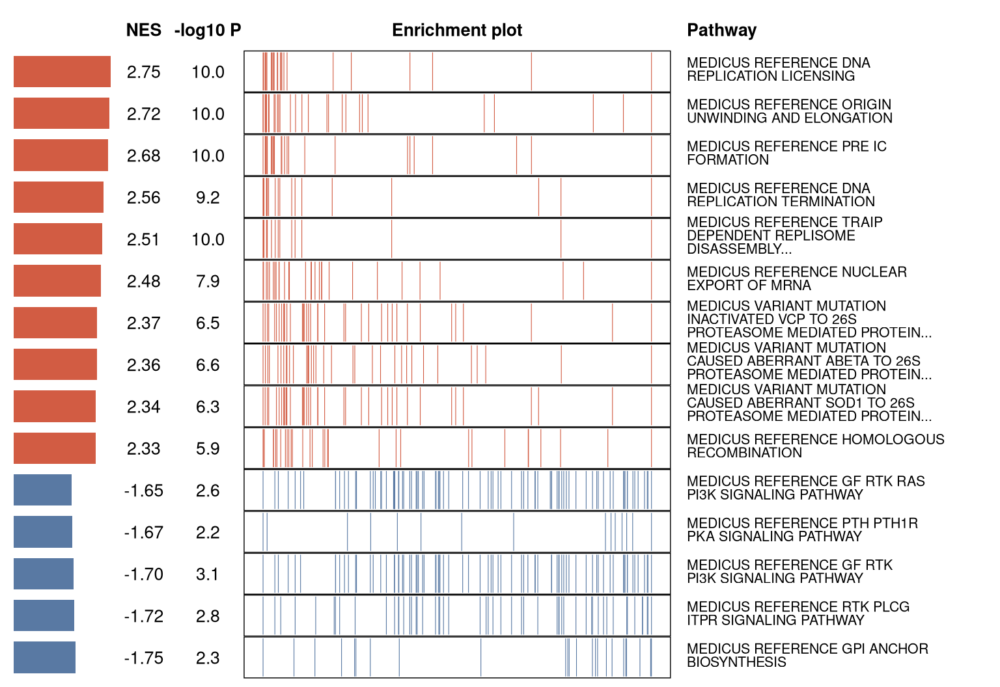
a_hm$WP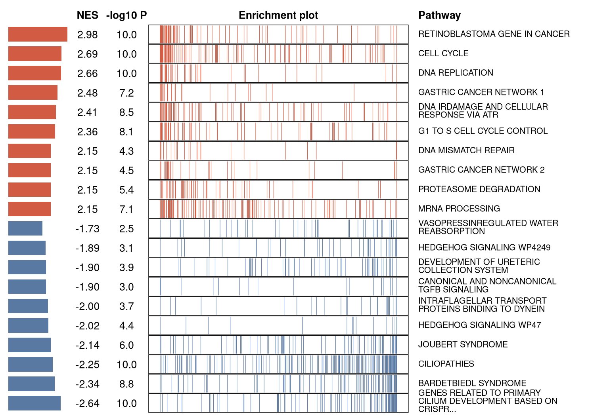
# Keyword focus (e.g., signaling)
sig_hm <- plot_heat(
seDataFgsea = SE_res,
pathwaysAll = pathways.all,
strings = c("SIGNALING")
)
sig_hm$SIGNALING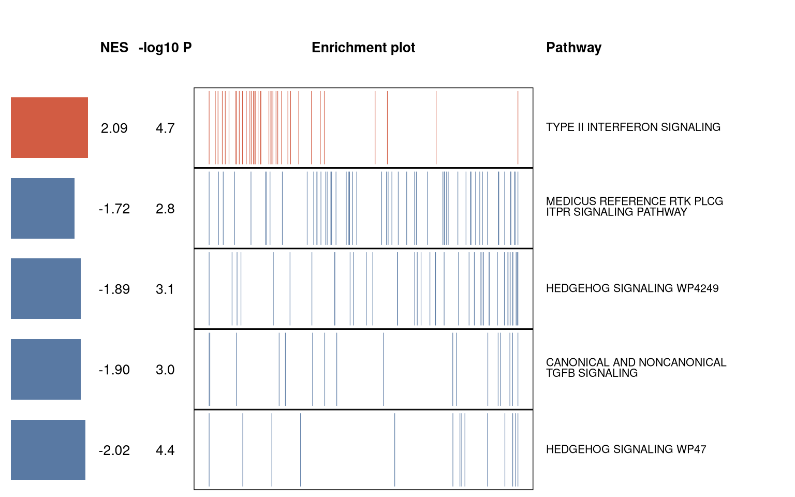
Bar Plot — barPlot()
The bar plot displays the top enriched pathways ranked by NES by default, with bar opacity representing −log10(p-value) by default to highlight the most enriched categories. The plotting function also supports using alternative variables for the x-axis and opacity.
| Essential Parameters | Description |
|---|---|
seDataFgsea (required) |
SummarizedExperiment containing pathway-level GSEA results. |
x |
Variable on the x-axis ("NES", "Count", or
"GeneRatio"). |
alpha |
Statistical significance metric used for opacity
("pvalue", "p.adjust",
"qvalue"). |
topN |
Number of pathways to plot. |
library(ggplot2)
res.bar <- barPlot(
seDataFgsea = SE_res,
x = "NES",
alpha = "pvalue",
breaklineN = 45
)
res.bar$barPlot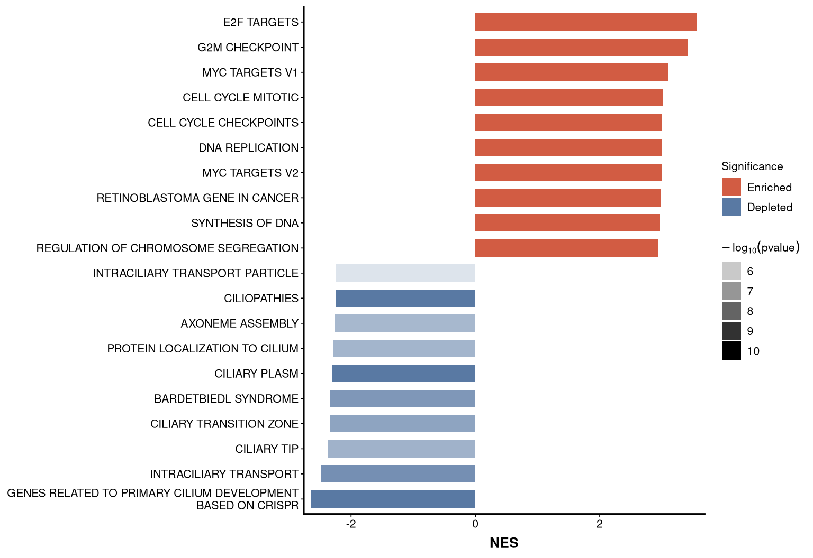
# table: res.bar$tableBarPlotChord Diagram — chordPlot()
The chord diagram Illustrates relationships between genes and their enriched pathways from GSEA results. In this visualization, genes and pathways are arranged as nodes around a circle, with connecting arcs representing gene–pathway associations. This provides an intuitive overview of shared and unique genes among pathways.
| Essential Parameters | Description |
|---|---|
seDataFgsea (required) |
GSEA results with gene-to-pathway mapping. |
showCategory |
Number or names of pathways to include. |
res.chord <- chordPlot(
seDataFgsea = SE_res,
showCategory = 2,
breaklineN = 30,
fontSize = 0.5
)
#> 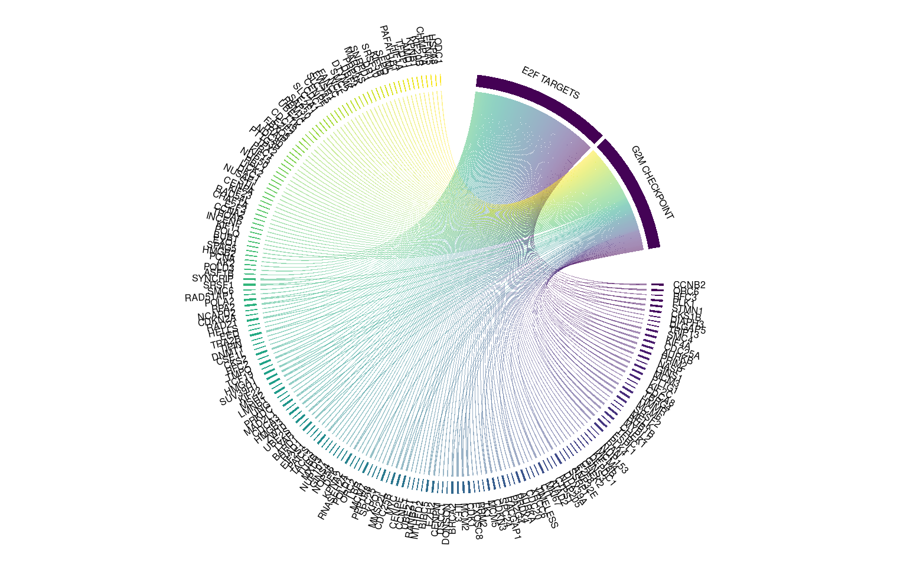
res.chord$chordPlot
# table: res.chord$tableChordPlotConcept Network — cnetPlot()
The concept network visualizes gene–pathway relationships as a network, showing overlap and connectivity between functional categories. Nodes represent pathways and genes, while edges indicate membership relationships. Optional color coding based on gene expression correlation values highlights differential trends. This visualization helps identify hub genes shared across multiple pathways and reveals the interconnected structure of enriched gene sets.
| Essential Parameters | Description |
|---|---|
seDataFgsea (required) |
SummarizedExperiment containing GSEA and optionally gene-level correlation data. |
showCategory |
Number or names of pathways to include. |
nodeLabel |
Variable to label the node. |
color |
Column name for coloring genes (e.g., "cor" or
"log2FC"). |
res.cnet <- cnetPlot(
seDataFgsea = SE_res,
showCategory = 5,
nodeLabel = 'category',
color = "cor",
fontSize = 1.2,
breaklineN = 30
)
res.cnet$cnetPlot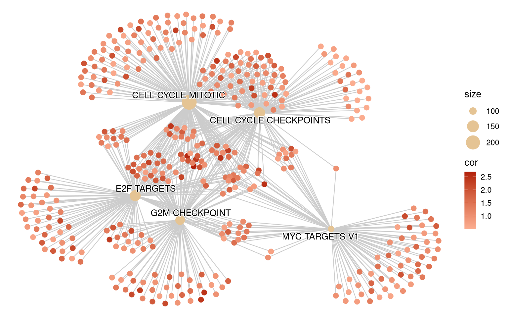
# tables: res.cnet$tableEdgeCnetPlot, res.cnet$tableNodeCnetPlotDot Plot — dotPlot()
The dot plot displays enriched pathways using dot size (gene count/ratio) and color (significance or NES) for compact multi-encoding visualization.
| Essential Parameters | Description |
|---|---|
seDataFgsea (required) |
SummarizedExperiment containing GSEA results. |
showCategory |
Number or specific pathways to show. |
x |
X-axis variable ("GeneRatio", "Count",
"NES"). |
size |
Variable controlling dot size ("Count" or
"GeneRatio"). |
alpha |
Variable mapped to color/transparency ("pvalue",
"p.adjust", "qvalue"). |
res.dot <- dotPlot(
seDataFgsea = SE_res,
showCategory = 10,
x = "GeneRatio",
size = "Count",
alpha = 'pvalue',
breaklineN = 20
)
res.dot$dotPlot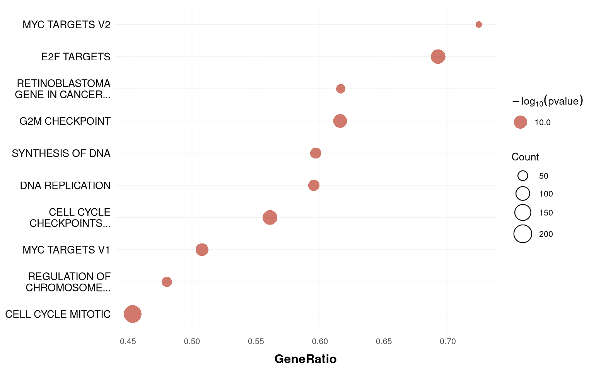
# table: res.dot$tableDotPlotEnrichment Map — emapPlot()
The enrichment map function generates an intuitive overview of the functional landscape. It clusters related biological processes and highlights pathway relationships based on shared genes. In this network-based visualization, pathways are represented as nodes connected by edges, where edge thickness reflects the degree of similarity between pathways.
| Essential Parameters | Description |
|---|---|
seDataFgsea (required) |
SummarizedExperiment containing pairwise pathway similarity. |
showCategory |
Number or names of pathways to include. |
color |
Node color variable ("pvalue", "p.adjust",
or "qvalue"). |
minEdge |
Minimum pathway similarity required for drawing an edge in the network. |
res.ema <- emapPlot(
seDataFgsea = SE_res,
showCategory = 10,
color = "p.adjust",
minEdge = 0.2
)
res.ema$emapPlot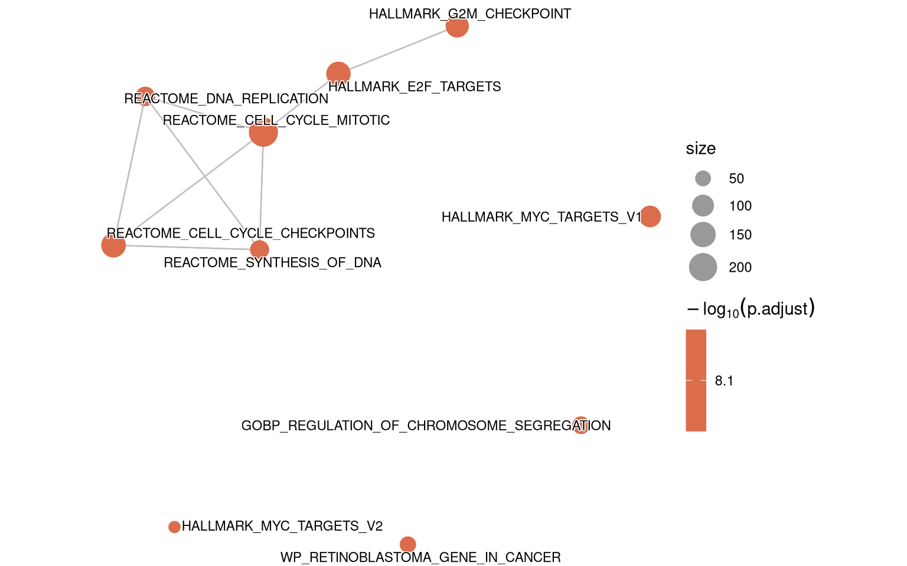
# table: res.ema$tableEmapPlotEnrichment Score — gseaPlot()
The enrichmnet score function plots the running enrichment score,
ranked gene positions, and statistical metrics for selected gene sets.
It provides a detailed view of how individual genes contribute to the
overall enrichment signal within a pathway. This function wraps
enrichplot::gseaplot2, streamlining the generation of
enrichment score visualizations.
| Essential Parameters | Description |
|---|---|
seDataFgsea (required) |
SummarizedExperiment with GSEA running-score data. |
showCategory |
Number or names of pathways to include. |
ESgeom |
Geometry for enrichment curve ("line" or
"dot"). |
subPlots |
Numeric integer between 1 to 3 to decide which subplots to display
(1 = running score, 2 = gene ticks,
3 = ranked list). |
gseaPlot(seDataFgsea = SE_res, showCategory = 5)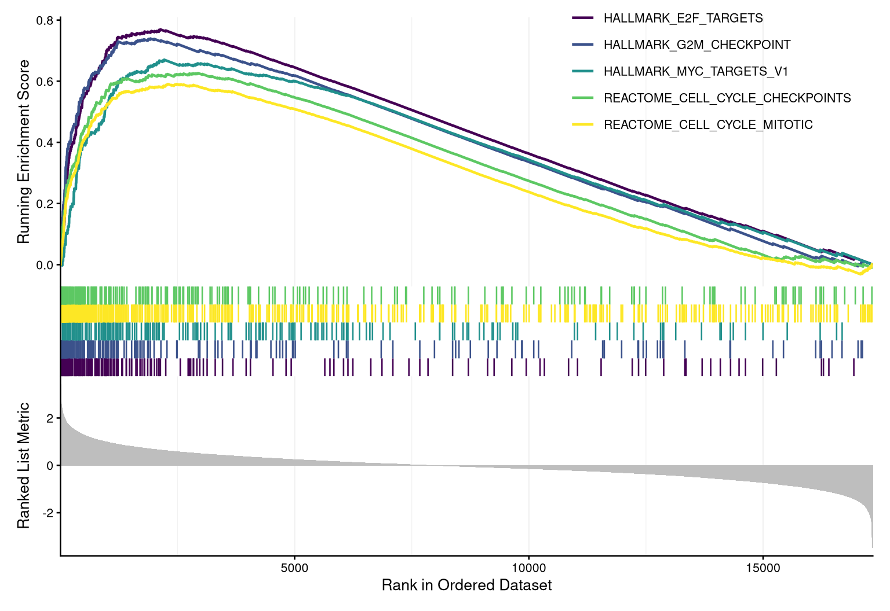
Simple Dot Heatmap — heatPlot()
The simple dot heatmap displays gene–pathway associations as a dot matrix where color encodes correlation coefficient and size encodes statistical significance measures.
| Essential Parameters | Description |
|---|---|
seDataFgsea (required) |
SummarizedExperiment with gene-level statistics. |
showCategory |
Number or names of pathways to display. |
color |
Column for dot color ("cor" or
"log2FC"). |
size |
Column for dot size ("pvalue" or
"p.adjust"). |
res.heat <- heatPlot(
seDataFgsea = SE_res,
breaklineN = 30,
size = 'pvalue',
color = 'cor'
)
#> Joining with `by = join_by(Gene)`
res.heat$heatPlot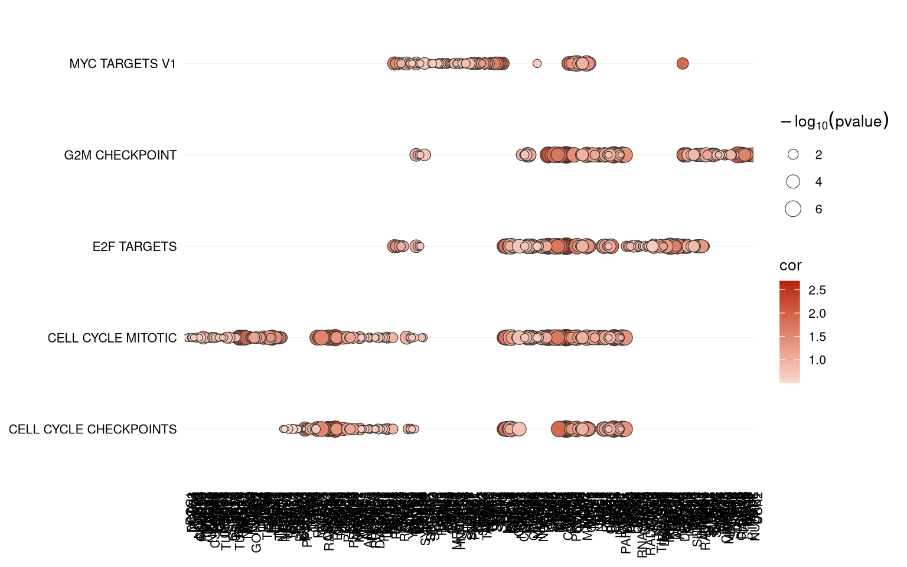
# table: res.heat$tableHeatPlotLollipop Plot — lollipopPlot()
The lollipop plot displays normalized enrichment scores (or another chosen metric) as horizontal lollipop bars, allowing quick comparison of pathway direction, magnitude, and significance. The plotting function also supports using alternative variables for the x-axis and opacity.
| Essential Parameters | Description |
|---|---|
seDataFgsea (required) |
SummarizedExperiment containing pathway-level statistics. |
showCategory |
Number or names of pathways to show. |
x |
Variable mapped to the x-axis ("NES",
"Count", "GeneRatio"). |
alpha |
Statistic controlling transparency ("pvalue",
"p.adjust", "qvalue"). |
size |
Variable for dot size ("Count" or
"GeneRatio"). |
res.lolli <- lollipopPlot(
seDataFgsea = SE_res,
x = "NES",
alpha = "p.adjust",
size = "Count"
)
res.lolli$lollipopPlot
# table: res.lolli$tableLollipopPlotRidge Plot — ridgePlot()
The ridge plot shows the distribution of gene expression values (or ranking metrics) for each enriched pathway. Each ridge represents a gene set, with the curve shape reflecting the distribution of its member genes along the ranked gene list. This visualization provides an intuitive way to compare enrichment patterns across multiple pathways.
| Essential Parameters | Description |
|---|---|
seDataFgsea (required) |
SummarizedExperiment containing ranked gene statistics. |
showCategory |
Number or names of pathways to include. |
fill |
Variable mapped to ridge fill color ("pvalue",
"p.adjust", "qvalue"). |
res.ridge <- ridgePlot(
seDataFgsea = SE_res,
showCategory = 10,
fill = "p.adjust",
breaklineN = 30)
res.ridge$ridgePlot
#> Picking joint bandwidth of 0.219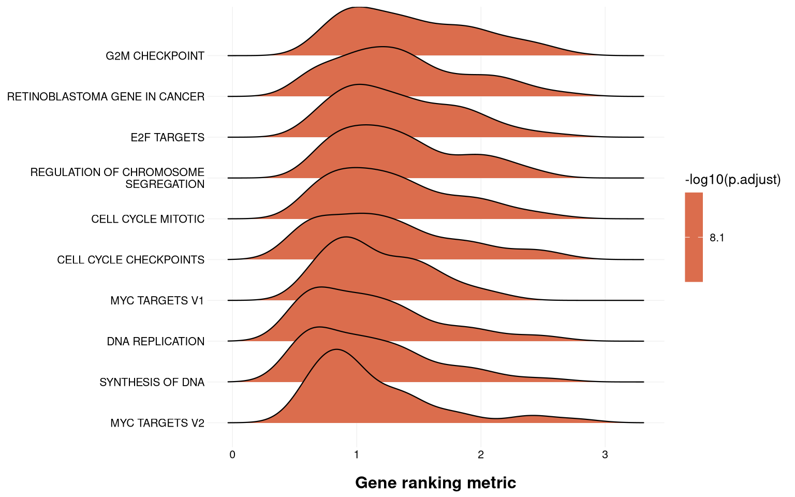
# table: res.ridge$tableRidgePlotTree — treePlot()
The tree plot function generates a hierarchical clustering tree (dendrogram) that groups enriched pathways based on gene overlap or similarity. This visualization helps reveal functional relationships and cluster structures among pathways. Each branch represents a group of related pathways, while node colors can encode statistical significance or other enrichment metrics. The function offers flexible control over clustering methods, label formatting, highlighting, and layout parameters for clear and customizable visualizations.
| Essential Parameters | Description |
|---|---|
seDataFgsea (required) |
SummarizedExperiment with pathway-level enrichment results. |
showCategory |
Number or names of pathways to include. |
dotColor |
Variable used to color pathway nodes ("pvalue",
"p.adjust", "NES"). |
res.tree <- treePlot(
seDataFgsea = SE_res,
showCategory = 10,
dotColor = 'pvalue'
)
#> ! # Invaild edge matrix for <phylo>. A <tbl_df> is returned.
#> ! # Invaild edge matrix for <phylo>. A <tbl_df> is returned.
#> ! # Invaild edge matrix for <phylo>. A <tbl_df> is returned.
#> ! # Invaild edge matrix for <phylo>. A <tbl_df> is returned.
#> ! # Invaild edge matrix for <phylo>. A <tbl_df> is returned.
#> ! # Invaild edge matrix for <phylo>. A <tbl_df> is returned.
#> ! # Invaild edge matrix for <phylo>. A <tbl_df> is returned.
#> ! # Invaild edge matrix for <phylo>. A <tbl_df> is returned.
#> ! # Invaild edge matrix for <phylo>. A <tbl_df> is returned.
#> ! # Invaild edge matrix for <phylo>. A <tbl_df> is returned.
#> ! # Invaild edge matrix for <phylo>. A <tbl_df> is returned.
#> ! # Invaild edge matrix for <phylo>. A <tbl_df> is returned.
res.tree$treePlot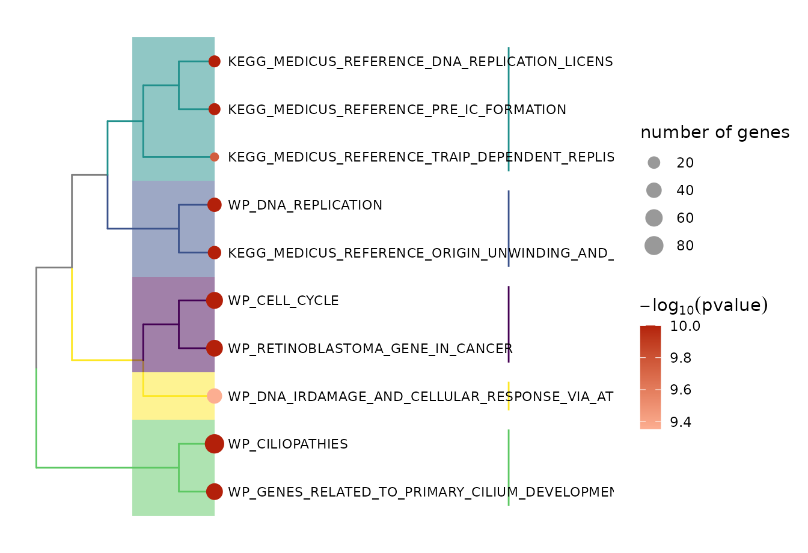
# table: res.tree$tableTreePlotUpSet Plot — upsetPlot()
The upset plot visualizes gene overlap among multiple enriched
pathways using an UpSet layout. The lower intersection matrix indicates
which pathways contribute to each gene-set combination, while the upper
panel summarizes each intersection either as a boxplot
of correlation coefficients or a bar chart of set sizes
(controlled by type = "box" or "bar").
| Essential Parameters | Description |
|---|---|
seDataFgsea (required) |
SummarizedExperiment with pathway-gene relationships. |
showCategory |
Number or names of pathways to include. |
type |
Type of top summary plot ("box" or
"bar"). |
res.upset <- upsetPlot(
seDataFgsea = SE_res,
showCategory = 5,
breaklineN = 30,
type = "box")
res.upset$upsetPlot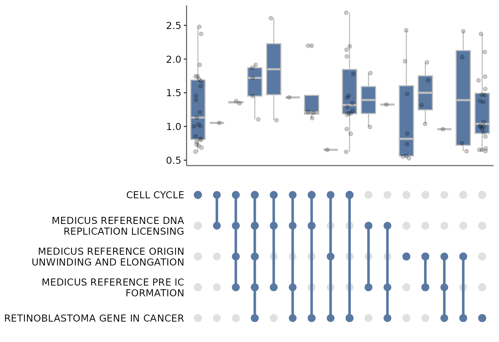
# table: res.upset$tableUpsetPlotVisualization Decision Guide
This section shows what each SigFun plotting function does, what it needs, and how to use it quickly and consistently. Below is a quick‑reference table summarizing all available visualization functions in SigFun, their focus, and how to interpret them.
| Visualization Function | Primary Focus | Best For | Typical Interpretation |
|---|---|---|---|
plot_heat() |
Integrated multi-panel overview | Summarizing top pathways across multiple databases | Compare NES, p-values, and enrichment curves together. |
barPlot() |
Ranked significance summary | Highlighting top enriched pathways | Identify most significant or strongly enriched pathways. |
chordPlot() |
Gene–pathway overlap | Showing shared or unique genes | Explore how genes contribute to multiple pathways. |
cnetPlot() |
Gene–pathway network | Visualizing connections among pathways | Reveal hub genes shared between categories. |
dotPlot() |
Compact pathway summary | Quick overview of enrichment strength and gene ratios | Compare significance and gene ratio across terms. |
emapPlot() |
Pathway similarity network | Detecting functional clusters | Identify groups of related pathways via shared genes. |
gseaPlot() |
Individual pathway enrichment score | Inspecting enrichment dynamics | Examine running enrichment score and cor e-enriched genes. |
heatPlot() |
Gene × pathway association | Gene-level contribution visualization | Assess correlation or log2FC patterns across pathways. |
lollipopPlot() |
NES-based summary | Comparing enrichment direction and magnitude | Visualize up- vs. down -regulated pathways by NES. |
ridgePlot() |
Distribution of ranked genes | Exploring enrichment density per pathway | View how ranked genes distribute across pathways. |
treePlot() |
Pathway clustering | Identifying similarity structure among terms | See hierarchical relationships among functional sets. |
upsetPlot() |
Gene set intersections | Comparing overlap among pathways | Quantify shared and unique genes between top terms. |
Session Info
#> R version 4.4.3 (2025-02-28)
#> Platform: x86_64-pc-linux-gnu
#> Running under: CentOS Stream 9
#>
#> Matrix products: default
#> BLAS/LAPACK: FlexiBLAS OPENBLAS-OPENMP; LAPACK version 3.9.0
#>
#> locale:
#> [1] LC_CTYPE=en_US.UTF-8 LC_NUMERIC=C
#> [3] LC_TIME=en_US.UTF-8 LC_COLLATE=en_US.UTF-8
#> [5] LC_MONETARY=en_US.UTF-8 LC_MESSAGES=en_US.UTF-8
#> [7] LC_PAPER=en_US.UTF-8 LC_NAME=C
#> [9] LC_ADDRESS=C LC_TELEPHONE=C
#> [11] LC_MEASUREMENT=en_US.UTF-8 LC_IDENTIFICATION=C
#>
#> time zone: Asia/Taipei
#> tzcode source: system (glibc)
#>
#> attached base packages:
#> [1] stats graphics grDevices utils datasets methods base
#>
#> other attached packages:
#> [1] ggplot2_4.0.0 dplyr_1.1.4 SigFun_0.99.11 BiocStyle_2.34.0
#>
#> loaded via a namespace (and not attached):
#> [1] RColorBrewer_1.1-3 shape_1.4.6.1
#> [3] rstudioapi_0.17.1 jsonlite_2.0.0
#> [5] magrittr_2.0.3 ggtangle_0.0.7
#> [7] farver_2.1.2 rmarkdown_2.29
#> [9] GlobalOptions_0.1.2 fs_1.6.6
#> [11] zlibbioc_1.52.0 ragg_1.3.3
#> [13] vctrs_0.6.5 memoise_2.0.1
#> [15] ggtree_3.14.0 rstatix_0.7.2
#> [17] htmltools_0.5.8.1 S4Arrays_1.6.0
#> [19] forcats_1.0.0 broom_1.0.10
#> [21] SparseArray_1.6.2 Formula_1.2-5
#> [23] gridGraphics_0.5-1 sass_0.4.10
#> [25] bslib_0.9.0 htmlwidgets_1.6.4
#> [27] desc_1.4.3 plyr_1.8.9
#> [29] cachem_1.1.0 igraph_2.1.4
#> [31] lifecycle_1.0.4 pkgconfig_2.0.3
#> [33] Matrix_1.7-4 R6_2.6.1
#> [35] fastmap_1.2.0 gson_0.1.0
#> [37] GenomeInfoDbData_1.2.13 MatrixGenerics_1.18.1
#> [39] digest_0.6.37 aplot_0.2.8
#> [41] enrichplot_1.26.6 ggnewscale_0.5.2
#> [43] colorspace_2.1-1 patchwork_1.3.2
#> [45] AnnotationDbi_1.68.0 S4Vectors_0.44.0
#> [47] textshaping_1.0.3 GenomicRanges_1.58.0
#> [49] RSQLite_2.4.3 org.Hs.eg.db_3.20.0
#> [51] ggpubr_0.6.1 labeling_0.4.3
#> [53] httr_1.4.7 abind_1.4-8
#> [55] compiler_4.4.3 bit64_4.6.0-1
#> [57] withr_3.0.2 S7_0.2.0
#> [59] backports_1.5.0 BiocParallel_1.40.2
#> [61] carData_3.0-5 DBI_1.2.3
#> [63] R.utils_2.13.0 ggsignif_0.6.4
#> [65] rappdirs_0.3.3 DelayedArray_0.32.0
#> [67] tools_4.4.3 ape_5.8-1
#> [69] R.oo_1.27.1 glue_1.8.0
#> [71] nlme_3.1-168 GOSemSim_2.32.0
#> [73] grid_4.4.3 reshape2_1.4.4
#> [75] fgsea_1.32.4 generics_0.1.4
#> [77] gtable_0.3.6 R.methodsS3_1.8.2
#> [79] tidyr_1.3.1 data.table_1.17.8
#> [81] car_3.1-3 XVector_0.46.0
#> [83] BiocGenerics_0.52.0 ggrepel_0.9.6
#> [85] pillar_1.11.0 stringr_1.5.2
#> [87] yulab.utils_0.2.1 circlize_0.4.16
#> [89] splines_4.4.3 treeio_1.30.0
#> [91] lattice_0.22-7 bit_4.6.0
#> [93] tidyselect_1.2.1 GO.db_3.20.0
#> [95] Biostrings_2.74.1 knitr_1.50
#> [97] bookdown_0.44 IRanges_2.40.1
#> [99] SummarizedExperiment_1.36.0 stats4_4.4.3
#> [101] xfun_0.53 Biobase_2.66.0
#> [103] matrixStats_1.5.0 stringi_1.8.7
#> [105] UCSC.utils_1.2.0 lazyeval_0.2.2
#> [107] ggfun_0.2.0 yaml_2.3.10
#> [109] evaluate_1.0.5 codetools_0.2-20
#> [111] tibble_3.3.0 qvalue_2.38.0
#> [113] BiocManager_1.30.26 ggplotify_0.1.2
#> [115] cli_3.6.5 systemfonts_1.2.3
#> [117] jquerylib_0.1.4 Rcpp_1.1.0
#> [119] GenomeInfoDb_1.42.3 png_0.1-8
#> [121] parallel_4.4.3 pkgdown_2.1.3
#> [123] blob_1.2.4 clusterProfiler_4.14.6
#> [125] DOSE_4.0.1 viridisLite_0.4.2
#> [127] tidytree_0.4.6 scales_1.4.0
#> [129] ggridges_0.5.7 purrr_1.1.0
#> [131] crayon_1.5.3 rlang_1.1.6
#> [133] cowplot_1.2.0 fastmatch_1.1-6
#> [135] KEGGREST_1.46.0